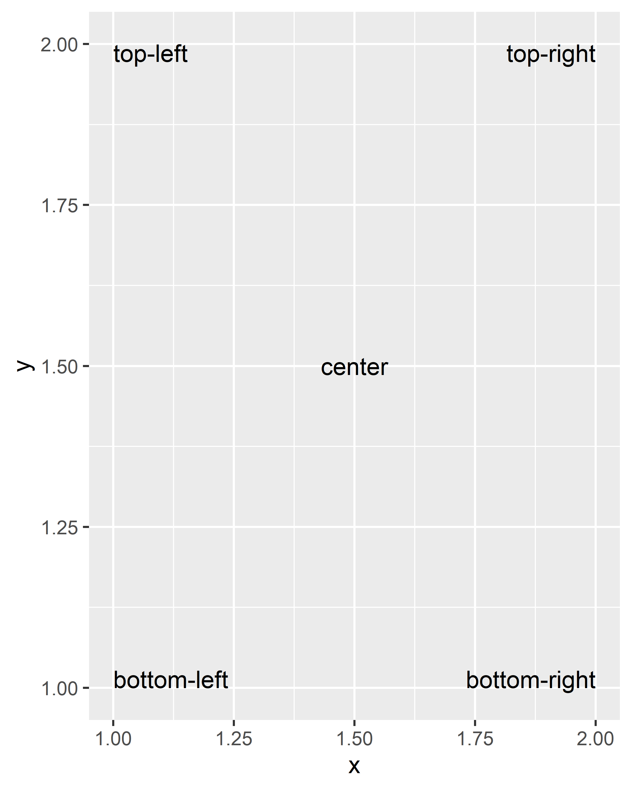
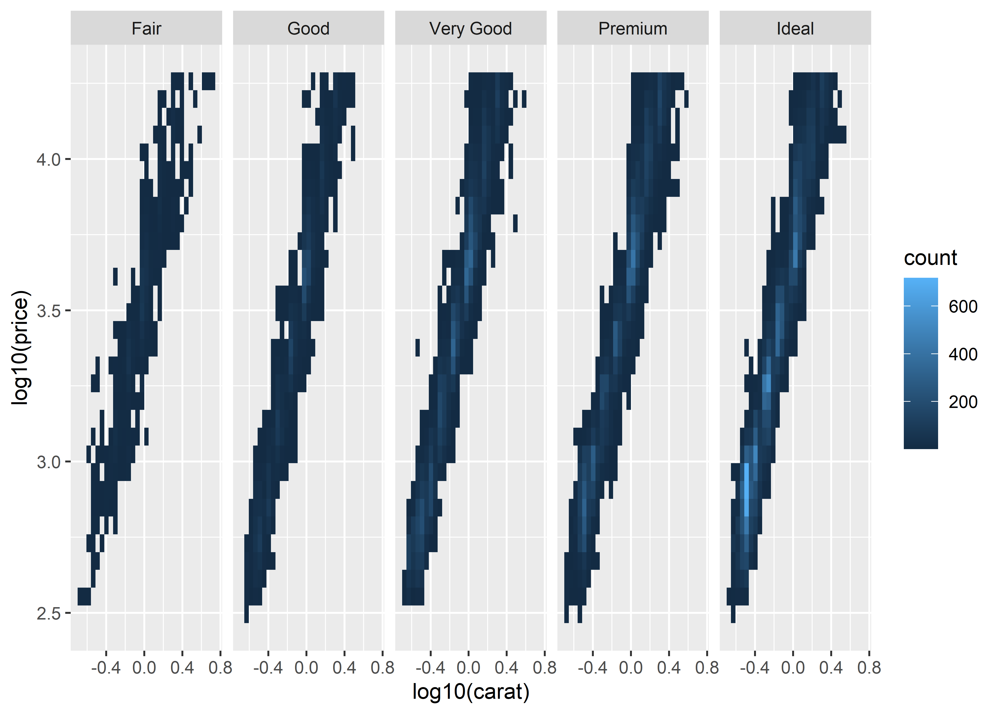
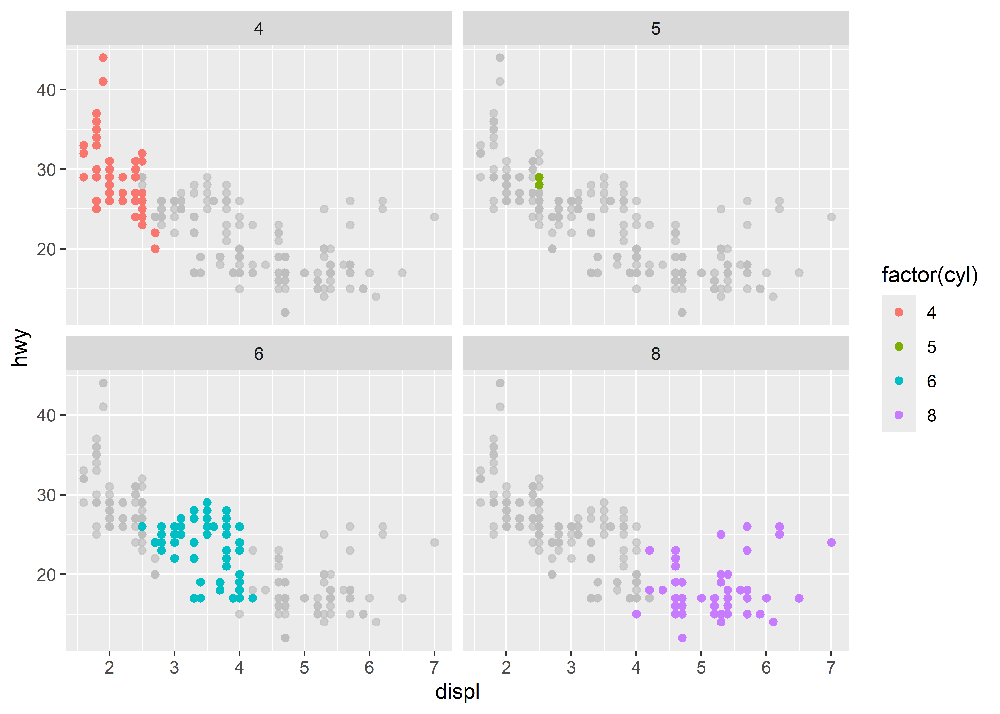

ggplot(mpg, aes(displ, hwy)) +
geom_point(aes(colour = factor(cyl))) +
labs(
x = "Engine displacement (litres)",
y = "Highway miles per gallon",
colour = "Number of cylinders",
title = "Mileage by engine size and cylinders",
subtitle = "Source: https://fueleconomy.gov"
)8 Annotations
You are reading the work-in-progress third edition of the ggplot2 book. This chapter should be readable but is currently undergoing final polishing.
When constructing a data visualisation, it is often necessary to make annotations to the data displayed. Conceptually, an annotation supplies metadata for the plot: that is, it provides additional information about the data being displayed. From a practical standpoint, however, metadata is just another form of data. Because of this, the annotation tools in ggplot2 reuse the same geoms that are used to create other plots. However, to meet the specific needs that users often have when annotating plots, there are some helper functions in ggplot2 itself, and a number of other packages have extended ggplot2 in ways you may find helpful.
8.1 Plot and axis titles
When customising a plot, it is often useful to modify the titles associated with the plot, axes, and legends. To assist with this task ggplot2 provides the labs() helper function, which lets you set the various titles using name-value pairs like title = My plot title", x = "X axis" or fill = "fill legend":
The values supplied to labs() are typically text strings, with \n used to specify line breaks, but you can also supply mathematical expressions wrapped in quote(). The rules by which these expressions are interpreted can be found by typing ?plotmath.
values <- seq(from = -2, to = 2, by = .01)
df <- data.frame(x = values, y = values ^ 3)
ggplot(df, aes(x, y)) +
geom_path() +
labs(y = quote(f(x) == x^3))It is also possible to include (some) markdown in axis and legend titles with the help of the ggtext package (Wilke 2020) and the ggplot2 theme system (see sec-polishing). To enable markdown you need to set the relevant theme element to ggtext::element_markdown(), as demonstrated below:
df <- data.frame(x = 1:3, y = 1:3)
base <- ggplot(df, aes(x, y)) +
geom_point() +
labs(x = "Axis title with *italics* and **boldface**")
base
base + theme(axis.title.x = ggtext::element_markdown())There are two ways to remove the axis label. Setting labs(x = "") omits the label but still allocates space; setting labs(x = NULL) removes the label and its space.
To learn more about how labs() is related to scales in ggplot2, see sec-scale-names.
8.2 Text labels
Adding text to a plot is one of the most common forms of annotation. Most plots will not benefit from adding text to every single observation on the plot, but labelling outliers and other important points is very useful. However, text annotation can be tricky due to the way that R handles fonts. The ggplot2 package doesn’t have all the answers, but it does provide some tools to make your life a little easier. The main tool for labelling plots is geom_text(), which adds label text at the specified x and y positions. geom_text() has the most aesthetics of any geom, because there are so many ways to control the appearance of a text:
The
familyaesthetic provides the name of a font. This aesthetic does allow you to use the name of a system font, but some care is required. There are only three fonts that are guaranteed to work everywhere: “sans” (the default), “serif”, or “mono”. To illustrate these:df <- data.frame(x = 1, y = 3:1, family = c("sans", "serif", "mono")) ggplot(df, aes(x, y)) + geom_text(aes(label = family, family = family))The reason that it can be tricky to use system fonts in a plot is that text drawing is handled differently by each graphics device (GD). There are two groups of GDs: screen devices such as
windows()(for Windows),quartz()(for Macs),x11()(mostly for Linux) andRStudioGD()(within RStudio) draw the plot to the screen, whereas file devices such aspng()andpdf()write the plot to a file. Unfortunately, the devices do not specify fonts in the same way so if you want a font to work everywhere you need to configure the devices in different ways. Two packages simplify the quandary a bit:showtext, https://github.com/yixuan/showtext, by Yixuan Qiu, makes GD-independent plots by rendering all text as polygons.
extrafont, https://github.com/wch/extrafont, by Winston Chang, converts fonts to a standard format that all devices can use.
Both approaches have pros and cons, so you will to need to try both of them and see which works best for your needs.
The
fontfaceaesthetic specifies the face, and can take three values: “plain” (the default), “bold” or “italic”. For example:df <- data.frame(x = 1, y = 3:1, face = c("plain", "bold", "italic")) ggplot(df, aes(x, y)) + geom_text(aes(label = face, fontface = face))You can adjust the alignment of the text with the
hjust(“left”, “center”, “right”, “inward”, “outward”) andvjust(“bottom”, “middle”, “top”, “inward”, “outward”) aesthetics. The aligment is centered by default, but there are often good reasons to override this. One of the most useful alignments is “inward”. It aligns text towards the middle of the plot, which ensures that labels remain within the plot limits:df <- data.frame( x = c(1, 1, 2, 2, 1.5), y = c(1, 2, 1, 2, 1.5), text = c( "bottom-left", "top-left", "bottom-right", "top-right", "center" ) ) ggplot(df, aes(x, y)) + geom_text(aes(label = text)) ggplot(df, aes(x, y)) + geom_text(aes(label = text), vjust = "inward", hjust = "inward")
The font size is controlled by the
sizeaesthetic. Unlike most tools, ggplot2 specifies the size in millimeters (mm), rather than the usual points (pts). The reason for this choice is that it makes it the units for font sizes consistent with how other sizes are specified in ggplot2. (There are 72.27 pts in a inch, so to convert from points to mm, just multiply by 25.4 / 72.27).anglespecifies the rotation of the text in degrees.
The ggplot2 package does allow you to map data values to the aesthetics used by geom_text(), but you should use restraint: it is hard to perceive the relationship between variables mapped to these aesthetics, and rarely useful to do so.
In addition to the various aesthetics, geom_text() has three parameters that you can specify. Unlike the aesthetics these only take single values, so they must be the same for all labels:
Often you want to label existing points on the plot, but you don’t want the text to overlap with the points (or bars etc). In this situation it’s useful to offset the text a little, which you can do with the
nudge_xandnudge_yparameters:df <- data.frame( treatment = c("a", "b", "c"), response = c(1.2, 3.4, 2.5) ) ggplot(df, aes(treatment, response)) + geom_point() + geom_text( mapping = aes(label = paste0("(", response, ")")), nudge_x = -0.3 ) + ylim(1.1, 3.6)(Note that we manually tweaked the y-axis limits to give the labels a little extra room.)
The third parameter is
check_overlap. Ifcheck_overlap = TRUE, overlapping labels will be automatically removed from the plot. The algorithm is simple: labels are plotted in the order they appear in the data frame; if a label would overlap with an existing point, it’s omitted.ggplot(mpg, aes(displ, hwy)) + geom_text(aes(label = model)) + xlim(1, 8) ggplot(mpg, aes(displ, hwy)) + geom_text(aes(label = model), check_overlap = TRUE) + xlim(1, 8)At first glance this feature does not appear very useful, but the simplicity of the algorithm comes in handy. If you sort the input data in order of priority the result is a plot with labels that emphasise important data points.
A variation on geom_text() is geom_label(): it draws a rounded rectangle behind the text. This makes it useful for adding labels to plots with busy backgrounds:
label <- data.frame(
waiting = c(55, 80),
eruptions = c(2, 4.3),
label = c("peak one", "peak two")
)
ggplot(faithfuld, aes(waiting, eruptions)) +
geom_tile(aes(fill = density)) +
geom_label(data = label, aes(label = label))Labelling data well poses some challenges:
Text does not affect the limits of the plot. Unfortunately there’s no way to make this work since a label has an absolute size (e.g. 3 cm), regardless of the size of the plot. This means that the limits of a plot would need to be different depending on the size of the plot — there’s just no way to make that happen with ggplot2. Instead, you’ll need to tweak
xlim()andylim()based on your data and plot size.If you want to label many points, it is difficult to avoid overlaps.
check_overlap = TRUEis useful, but offers little control over which labels are removed. A popular technique for addressing this is to use the ggrepel package https://github.com/slowkow/ggrepel by Kamil Slowikowski. The package suppliesgeom_text_repel(), which optimizes the label positioning to avoid overlap. It works quite well so long as the number of labels is not excessive:mini_mpg <- mpg[sample(nrow(mpg), 20), ] ggplot(mpg, aes(displ, hwy)) + geom_point(colour = "red") + ggrepel::geom_text_repel(data = mini_mpg, aes(label = class))It can sometimes be difficult to ensure that text labels fit within the space that you want. The ggfittext package https://github.com/wilkox/ggfittext by Claus Wilke contains useful tools that can assist with this, including functions that allow you to place text labels inside the columns in a bar chart.
8.3 Building custom annotations
Labelling individual points with text is an important kind of annotation, but it is not the only useful technique. The ggplot2 package provides several other tools to annotate plots using the same geoms you would use to display data. For example, you can use:
geom_text()andgeom_label()to add text, as illustrated earlier.geom_rect()to highlight interesting rectangular regions of the plot.geom_rect()has aestheticsxmin,xmax,yminandymax.geom_line(),geom_path()andgeom_segment()to add lines. All these geoms have anarrowparameter, which allows you to place an arrowhead on the line. Create arrowheads witharrow(), which has argumentsangle,length,endsandtype.geom_vline(),geom_hline()andgeom_abline()allow you to add reference lines (sometimes called rules), that span the full range of the plot.
Typically, you can either put annotations in the foreground (using alpha if needed so you can still see the data), or in the background. With the default background, a thick white line makes a useful reference: it’s easy to see but it doesn’t jump out at you. To illustrate how ggplot2 tools can be used to annotate plots we’ll start with a time series plotting US unemployment over time:
ggplot(economics, aes(date, unemploy)) +
geom_line()One useful way to annotate this plot is to use shading to indicate which president was in power at the time. To do this, we use geom_rect() to introduce shading, geom_vline() to introduce separators, geom_text() to add labels, and then use geom_line() to overlay the data on top of these background elements:
presidential <- subset(presidential, start > economics$date[1])
ggplot(economics) +
geom_rect(
aes(xmin = start, xmax = end, fill = party),
ymin = -Inf, ymax = Inf, alpha = 0.2,
data = presidential
) +
geom_vline(
aes(xintercept = as.numeric(start)),
data = presidential,
colour = "grey50", alpha = 0.5
) +
geom_text(
aes(x = start, y = 2500, label = name),
data = presidential,
size = 3, vjust = 0, hjust = 0, nudge_x = 50
) +
geom_line(aes(date, unemploy)) +
scale_fill_manual(values = c("blue", "red")) +
xlab("date") +
ylab("unemployment")Notice that there is little new here: for the most part, annotating plots in ggplot2 is a straightforward manipulation of existing geoms. That said, there is one special thing to note in this code: the use of -Inf and Inf as positions. These refer to the top and bottom (or left and right) limits of the plot.
This technique can be applied in other ways too. For instance, you can use it to add a single annotation to a plot, but it’s a bit fiddly because you have to create a one row data frame:
yrng <- range(economics$unemploy)
xrng <- range(economics$date)
caption <- paste(strwrap("Unemployment rates in the US have
varied a lot over the years", 40), collapse = "\n")
ggplot(economics, aes(date, unemploy)) +
geom_line() +
geom_text(
aes(x, y, label = caption),
data = data.frame(x = xrng[1], y = yrng[2], caption = caption),
hjust = 0, vjust = 1, size = 4
)This code works, and generates the desired plot, but it is very cumbersome. It would be annoying to have to do this every time you want to add a single annotation, so ggplot2 includes the annotate() helper function which creates the data frame for you:
ggplot(economics, aes(date, unemploy)) +
geom_line() +
annotate(
geom = "text", x = xrng[1], y = yrng[2],
label = caption, hjust = 0, vjust = 1, size = 4
)The convenience of the annotate() function comes in handy in other situations. For example, a common form of annotation is to highlight a subset of points by drawing larger points in a different colour underneath the main data set. To highlight vehicles manufactured by Subaru you could use this to create the basic plot:
p <- ggplot(mpg, aes(displ, hwy)) +
geom_point(
data = filter(mpg, manufacturer == "subaru"),
colour = "orange",
size = 3
) +
geom_point() The problem with this is that the highlighted category would not be labelled. This is easily rectified using annotate()
p +
annotate(geom = "point", x = 5.5, y = 40, colour = "orange", size = 3) +
annotate(geom = "point", x = 5.5, y = 40) +
annotate(geom = "text", x = 5.6, y = 40, label = "subaru", hjust = "left")This approach has the advantage of creating a label inside the plot region, but the drawback is that the label is distant from the points it picks out (otherwise the orange and black dot adjacent to the label might be confused for real data). An alternative approach is to use a different geom to do the work. geom_curve() and geom_segment() can be used to draw curves and lines connecting points with labels, and can be used in conjunction with annotate() as illustrated below:
p +
annotate(
geom = "curve", x = 4, y = 35, xend = 2.65, yend = 27,
curvature = .3, arrow = arrow(length = unit(2, "mm"))
) +
annotate(geom = "text", x = 4.1, y = 35, label = "subaru", hjust = "left")8.4 Direct labelling
The Subaru plots above provide examples of “direct labelling”, in which the plot region itself contains the labels for groups of points instead of using a legend. This usually makes the plot easier to read because it puts the labels closer to the data. The broader ggplot2 ecosystem contains a variety of other tools to accomplish this in a more automated fashion. The directlabels package, by Toby Dylan Hocking, provides a number of tools to make this easier:
ggplot(mpg, aes(displ, hwy, colour = class)) +
geom_point()
ggplot(mpg, aes(displ, hwy, colour = class)) +
geom_point(show.legend = FALSE) +
directlabels::geom_dl(aes(label = class), method = "smart.grid")Directlabels provides a number of position methods. smart.grid is a reasonable place to start for scatterplots, but there are other methods that are more useful for frequency polygons and line plots. See the directlabels website, http://directlabels.r-forge.r-project.org, for other techniques.
Another take on this idea comes from the ggforce package by Thomas Lin Pedersen https://github.com/thomasp85/ggforce. The ggforce package contains a lot of useful tools to extend ggplot2 functionality, including functions such as geom_mark_ellipse() that overlays a plot with circular “highlight” marks. For example:
ggplot(mpg, aes(displ, hwy)) +
geom_point() +
ggforce::geom_mark_ellipse(aes(label = cyl, group = cyl))A third approach to direct labelling is provided in the gghighlight package by Hiroaki Yutani https://github.com/yutannihilation/gghighlight. In many situations is useful for highlighting points or lines (or indeed a variety of different geoms) within a plot, particularly for longitudinal data:
data(Oxboys, package = "nlme")
ggplot(Oxboys, aes(age, height, group = Subject)) +
geom_line() +
geom_point() +
gghighlight::gghighlight(Subject %in% 1:3)
#> Warning: Tried to calculate with group_by(), but the calculation failed.
#> Falling back to ungrouped filter operation...
#> Tried to calculate with group_by(), but the calculation failed.
#> Falling back to ungrouped filter operation...
#> label_key: Subject8.5 Annotation across facets
When used well, annotations can be a powerful tool to help your reader make sense of your data. One example of this is when you want the reader to compare groups across facets. For example, in the plot below it is easy to see the relationship within each facet, but the subtle differences across facets do not pop out:
ggplot(diamonds, aes(log10(carat), log10(price))) +
geom_bin2d() +
facet_wrap(vars(cut), nrow = 1)
It is much easier to see these subtle differences if we add a reference line:
mod_coef <- coef(lm(log10(price) ~ log10(carat), data = diamonds))
ggplot(diamonds, aes(log10(carat), log10(price))) +
geom_bin2d() +
geom_abline(intercept = mod_coef[1], slope = mod_coef[2],
colour = "white", linewidth = 1) +
facet_wrap(vars(cut), nrow = 1)In this plot, each facet displays the data for one category agains the same regression line. This makes it easier to compare the facets to each other because there is shared reference line to assist the visual comparison.
A variation on this theme arises when you want each facet of a plot to display data from a single group, with the complete data set plotted unobtrusively in each panel to aid visual comparison. The gghighlight package is particularly useful in this context:
ggplot(mpg, aes(displ, hwy, colour = factor(cyl))) +
geom_point() +
gghighlight::gghighlight() +
facet_wrap(vars(cyl))
Wilke, Claus O. 2020. Ggtext: Improved Text Rendering Support for ’Ggplot2’. https://CRAN.R-project.org/package=ggtext.